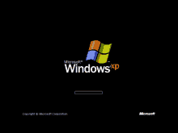

Microsoft Windows XP |
|
|---|---|
|  |
Version :- NT 5.1 ,NT 5.2
Release Date :- October 2001 Founder :- Bill Gates Comapany :- Microsoft |
|
Arguably one of the best Windows versions, Windows XP was released in October 2001 and brought Microsoft’s enterprise line and consumer line of operating systems under one roof. It was based on Windows NT like Windows 2000, but brought the consumer-friendly elements from Windows ME. The Start menu and task bar got a visual overhaul, bringing the familiar green Start button, blue task bar and vista wallpaper, along with various shadow and other visual effects. ClearType, which was designed to make text easier to read on LCD screens, was introduced, as were built-in CD burning, autoplay from CDs and other media, plus various automated update and recovery tools, that unlike Windows ME actually worked. |
|